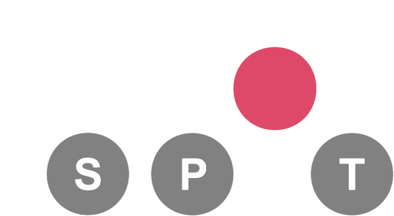

Hyperparameter Tuning Cookbook
A guide for scikit-learn, PyTorch, river, and spotPython
![]()
Preface: Optimization and Hyperparameter Tuning

This document provides a comprehensive guide to hyperparameter tuning using spotPython for scikit-learn, PyTorch, and river. The first part introduces spotPython’s surrogate model-based optimization process, while the second part focuses on hyperparameter tuning. Several case studies are presented, including hyperparameter tuning for sklearn models such as Support Vector Classification, Random Forests, Gradient Boosting (XGB), and K-nearest neighbors (KNN), as well as a Hoeffding Adaptive Tree Regressor from river. The integration of spotPython into the PyTorch and PyTorch Lightning training workflow is also discussed. With a hands-on approach and step-by-step explanations, this cookbook serves as a practical starting point for anyone interested in hyperparameter tuning with Python. Highlights include the interplay between Tensorboard, PyTorch Lightning, spotPython, and river. This publication is under development, with updates available on the corresponding webpage.
The goal of hyperparameter tuning is to optimize the hyperparameters in a way that improves the performance of the machine learning or deep learning model. Hyperparameters are parameters that are not learned during the training process, but are set before the training process begins. Hyperparameter tuning is an important, but often difficult and computationally intensive task. Changing the architecture of a neural network or the learning rate of an optimizer can have a significant impact on the performance.
Hyperparameter tuning is referred to as “hyperparameter optimization” (HPO) in the literature. However, since we do not consider the optimization, but also the understanding of the hyperparameters, we use the term “hyperparameter tuning” in this book. See also the discussion in Chapter 2 of Bartz et al. (2022), which lays the groundwork and presents an introduction to the process of tuning Machine Learning and Deep Learning hyperparameters and the respective methodology. Since the key elements such as the hyperparameter tuning process and measures of tunability and performance are presented in Bartz et al. (2022), we refer to this chapter for details.
The simplest, but also most computationally expensive, hyperparameter tuning approach uses manual search (or trial-and-error (Meignan et al. 2015)). Commonly encountered is simple random search, i.e., random and repeated selection of hyperparameters for evaluation, and lattice search (“grid search”). In addition, methods that perform directed search and other model-free algorithms, i.e., algorithms that do not explicitly rely on a model, e.g., evolution strategies (Bartz-Beielstein et al. 2014) or pattern search (Lewis, Torczon, and Trosset 2000) play an important role. Also, “hyperband”, i.e., a multi-armed bandit strategy that dynamically allocates resources to a set of random configurations and uses successive bisections to stop configurations with poor performance (Li et al. 2016), is very common in hyperparameter tuning. The most sophisticated and efficient approaches are the Bayesian optimization and surrogate model based optimization methods, which are based on the optimization of cost functions determined by simulations or experiments.
We consider a surrogate optimization based hyperparameter tuning approach that uses the Python version of the SPOT (“Sequential Parameter Optimization Toolbox”) (Bartz-Beielstein, Lasarczyk, and Preuss 2005), which is suitable for situations where only limited resources are available. This may be due to limited availability and cost of hardware, or due to the fact that confidential data may only be processed locally, e.g., due to legal requirements. Furthermore, in our approach, the understanding of algorithms is seen as a key tool for enabling transparency and explainability. This can be enabled, for example, by quantifying the contribution of machine learning and deep learning components (nodes, layers, split decisions, activation functions, etc.). Understanding the importance of hyperparameters and the interactions between multiple hyperparameters plays a major role in the interpretability and explainability of machine learning models. SPOT provides statistical tools for understanding hyperparameters and their interactions. Last but not least, it should be noted that the SPOT software code is available in the open source spotPython package on github1, allowing replicability of the results. This tutorial describes the Python variant of SPOT, which is called spotPython. The R implementation is described in Bartz et al. (2022). SPOT is an established open source software that has been maintained for more than 15 years (Bartz-Beielstein, Lasarczyk, and Preuss 2005) (Bartz et al. 2022).
The most recent version of this book is available at https://sequential-parameter-optimization.github.io/Hyperparameter-Tuning-Cookbook/
Book Structure
This document is structured in two parts. The first part describes the surrogate model based optimization process and the second part describes the hyperparameter tuning.
The first part is structured as follows: The concept of the hyperparameter tuning software spotPython is described in Chapter 5. This introduction is based on one-dimensional examples. Higher-dimensional examples are presented in Chapter 6. Chapter 7 describes isotropic and anisotorpic kriging. How different surrogate models from scikit-learn can be used as surrogates in spotPython optimization runs is explained in Chapter 8. Chapter 9 describes how different optimizers from the scipy optimize package can be used on the surrogate. The differences between the Kriging implementation in spotPython and the GaussianProcessRegressor in scikit-learn are explained in Chapter 10. Chapter 11 describes the expected improvement approach. How noisy functions can be handled is described in Chapter 12. Chapter 13 demonstrates how noisy functions can be handled with Optimal Computational Budget Allocation (OCBA) by Spot.
The second part is structured as follows: Chapter 14 describes the hyperparameter tuning of a support vector classifier from scikit-learn with spotPython. Chapter 19 illustrates the hyperparameter tuning of a Hoeffding Adaptive Tree Regressor from river with spotPython.
Chapter 22 describes the execution of the example from the tutorial “Hyperparameter Tuning with Ray Tune” (PyTorch 2023). The integration of spotPython into the PyTorch training workflow is described in detail in the following sections. Section 22.1 describes the setup of the tuners. Section 22.3 describes the data loading. Section 22.5 describes the model to be tuned. The search space is introduced in Section 22.5.3. Optimizers are presented in Section 22.6.1. How to split the data in train, validation, and test sets is described in Section 22.7.1. The selection of the loss function and metrics is described in Section 22.7.5. Section 22.8.1 describes the preparation of the spotPython call. The objective function is described in Section 22.8.2. How to use results from previous runs and default hyperparameter configurations is described in Section 22.8.3. Starting the tuner is shown in Section 22.8.4. TensorBoard can be used to visualize the results as shown in Section 22.9. Results are discussed and explained in Section 22.10. Section 22.11 presents a summary and an outlook for the execution of the example from the tutorial “Hyperparameter Tuning with Ray Tune”.
Four more examples are presented in the following sections: Chapter 15 describes the hyperparameter tuning of a random forest classifier from scikit-learn with spotPython. Chapter 16 describes the hyperparameter tuning of an XGBoost classifier from scikit-learn with spotPython. Chapter 17 describes the hyperparameter tuning of a support vector classifier from scikit-learn with spotPython. Chapter 18 describes the hyperparameter tuning of a k-nearest neighbors classifier from scikit-learn with spotPython.
This part of the book is concluded with a description of the most recent PyTorch hyperparameter tuning approach, which is the integration of spotPython into the PyTorch Lightning training workflow. This is described in Chapter 23. This is considered as the most effective, efficient, and flexible way to integrate spotPython into the PyTorch training workflow.
- The open access book Bartz et al. (2022) provides a comprehensive overview of hyperparameter tuning. It can be downloaded from https://link.springer.com/book/10.1007/978-981-19-5170-1.
The .ipynb notebook (Bartz-Beielstein 2023) is updated regularly and reflects updates and changes in the spotPython package. It can be downloaded from https://github.com/sequential-parameter-optimization/spotPython/blob/main/notebooks/14_spot_ray_hpt_torch_cifar10.ipynb.
Software Used in this Book
spotPython (“Sequential Parameter Optimization Toolbox in Python”) is the Python version of the well-known hyperparameter tuner SPOT, which has been developed in the R programming environment for statistical analysis for over a decade. The related open-access book is available here: Hyperparameter Tuning for Machine and Deep Learning with R—A Practical Guide.
scikit-learn is a Python module for machine learning built on top of SciPy and is distributed under the 3-Clause BSD license. The project was started in 2007 by David Cournapeau as a Google Summer of Code project, and since then many volunteers have contributed.
PyTorch is an optimized tensor library for deep learning using GPUs and CPUs. Lightning is a lightweight PyTorch wrapper for high-performance AI research. It allows you to decouple the research from the engineering.
River is a Python library for online machine learning. It is designed to be used in real-world environments, where not all data is available at once, but streaming in.
spotRiver provides an interface between spotPython and River.
Citation
If this document has been useful to you and you wish to cite it in a scientific publication, please refer to the following paper, which can be found on arXiv: https://arxiv.org/abs/2307.10262.
@ARTICLE{bart23iArXiv,
author = {{Bartz-Beielstein}, Thomas},
title = "{Hyperparameter Tuning Cookbook:
A guide for scikit-learn, PyTorch, river, and spotPython}",
journal = {arXiv e-prints},
keywords = {Computer Science - Machine Learning,
Computer Science - Artificial Intelligence, 90C26, I.2.6, G.1.6},
year = 2023,
month = jul,
eid = {arXiv:2307.10262},
pages = {arXiv:2307.10262},
doi = {10.48550/arXiv.2307.10262},
archivePrefix = {arXiv},
eprint = {2307.10262},
primaryClass = {cs.LG},
adsurl = {https://ui.adsabs.harvard.edu/abs/2023arXiv230710262B},
adsnote = {Provided by the SAO/NASA Astrophysics Data System}
}